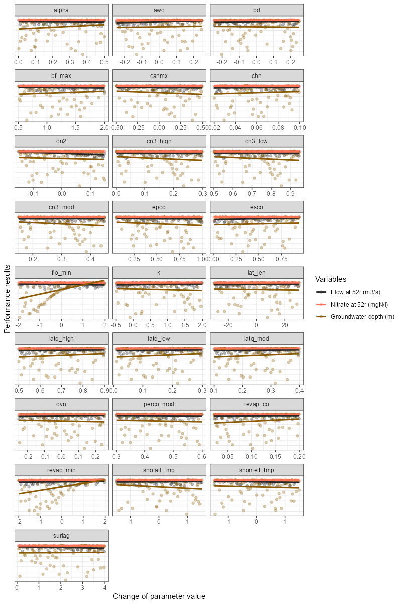

The calibration of the SWAT+ model is a complex process that involves
many steps. One of the most important steps is the visual inspection of
the model results. This document provides an overview of the functions
available in the SWATtunR package for plotting SWAT+ model
calibration and validation results. Functions intended to be used for
plotting at different stages of the SWAT+ model calibration and
validation process and not in sequential order. To run these function step 6 or/and step 6a
should be completed successfully. Same packages should be loaded as in
the step 1.
1. Dotty plots
For comparison, you can use the function plot_dotty. It allows examining model performance results versus parameter values.
The function has the following arguments:
-
par: a data frame of model parameter values for each simulation. -
var: model performance result vector or list of vectors to be plotted against parameter values. -
y_label: the label or vector of labels for the y-axis. Default is'y'. -
n_col: number of columns in the facet grid. Default is3. -
y_lim: defines limits for the y-axis. Default isNULL. -
y_inter: Y-axis intercept value. Default isNULL. -
trend: logical, indicating whether to add a trend line. Default isFALSE. -
run_ids: a numeric vector of run IDs to be highlighted in the plot. -
low_up: logical, TRUE if the whole possible parameter range should be used for the x-axis. Default isFALSE.
# Example of usage:
plot_dotty(sim_flow$parameter$values, obj_tbl$nse)
plot_dotty(sim_flow$parameter$values, obj_tbl$kge, n_col = 5, y_lim = c(0.5, 0.9))
plot_dotty(sim_flow$parameter$values, obj_tbl$pbias, n_col = 5)
plot_dotty(sim_flow$parameter$values, obj_tbl$nse, run_ids = c(1, 2, 5), low_up = TRUE)
plot_dotty(sim_flow$parameter$values, obj_tbl$kge, trend = TRUE)
Dotty plots can also be created for multiple variables in the simulation list. In this case, the dotty plot will be displayed on the same plot with different colors for each variable. Trends can also be added to the plot. Water flow and water quality variables can be plotted together on the same plot.
# Example of usage:
plot_dotty(par = sim_flow$parameter$values,
var = list(obj_tbl_m$obj_tbl_list$flo_day_52$nse,
obj_tbl_m$obj_tbl_list$no3_day_52_conc$nse,
obj_tbl_m$obj_tbl_list$gwd$nse),
y_label = c('Flow at 52r (m3/s)',
"Nitrate at 52r (mgN/l)",
"Groundwater depth (m)"),
trend = TRUE)
2. Simulation vs observed values time series
To plot the results of selected variable sets simulation results versus observed, you can use the plot_selected_sim. This function allows you to compare the selected simulated data with the observation data. The function has several arguments:
-
sim: object from SWATrunR. -
obs: dataframe for the observed data with two columns: ‘date’ and ‘value’. -
par_name: name of the parameter set to be used (default is NULL, which selects the first record). If you have multiple parameter sets, you can use this argument to select the one you want to use. For example,par_name = "flo_day"orpar_name = "no3_day_conc". -
run_ids: character vector with the IDs of the runs to be used in the plot. -
run_sel: character vector with the ID or IDs of the runs to be emphasized in the plot. -
plot_bands: logical. If TRUE, the plot will include lower and upper bands of results. -
period: character. If NULL, the plot will be based on the original time step of the simulation. Other examples are “day”, “week”, “month”, “year”, etc. If “average monthly”, the plot will be based on the multi-annual monthly values. -
fn_summarize: function to recalculate the time interval (default is “mean”), other options include “mean”, “median”, “sum”, “min”, “max”, etc. -
x_label: character. Label for the x-axis. Default is “Date”. -
y_label: character. Label for the y-axis. Default is “Discharge (m³/s)”.
##Simple example
plot_selected_sim(sim_flow, obs, par_name = "flo_day_52", run_ids = run_sel_ids)
This function can also be used to plot the average monthly values of
the selected variable set. In this case, the period
argument should be set to “average monthly”.
# Another example how all function arguments are used
plot_selected_sim(sim = sim_flow,
obs = obs,
par_name = "flo_day_52",
run_ids = run_sel_ids,
run_sel = run_sel_ids[1],
plot_bands = TRUE,
period = "average monthly",
fn_summarize = "mean",
x_label = "Month",
y_label = "Monthly flow average (m<sup>3</sup> s<sup>-1</sup>)")
3. Plotting parameter identifiability
The parameter identifiability plot is prepared based on the
methodology provided the article of Guse et al.
(2020). The plot below shows the ranges of parameter,s which
perform better for a certain performance metric. The
run_fraction defines the fraction of simulations which
should be considered in the analysis (with 1000 runs this value should
maybe not be lower than 0.2, too large values also do not make
much sense). For 5000 runs 0.1 would be a good value.
In case you used multiple variables in performance calculation, you
can use obj_tbl_list$var_name to select the variable for
which you want to plot parameter identifiability. Similar adjustment
could be done for dotty plots.
# Usage example
plot_parameter_identifiability(parameters = sim_flow$parameter$values,
objectives =
select(obj_tbl, -starts_with(c('rank', 'run', 'rsr')))
## This starts_with vector could be amended with
## other columns which should not be considered"
)
4. Plotting parameter sensitivity
To perform an OAT (One-At-A-Time) analysis could be used to visualize the sensitivity of the model to the parameters. The function plot_oat allows you to plot the results of the OAT analysis.
# Example of usage:
# If you want to perform an OAT analysis
# Select the parameter combination around which you want to do the OAT analysis
par_center_id <- 2
# Extract the center parameter set and assign again the "full" names to be used
# with SWATrunR
par_center <- sim_flow$parameter$values[par_center_id, ] %>%
set_names(sim_flow$parameter$definition$full_name)
# You can define your own parameter boundaries for the selected parameters
# Here a way how you can quickly extract the boundaries from the last simulation
par_bnd <- sim_flow$parameter$values %>%
map(., ~ c(min(.x), max(.x))) %>%
map(., ~ round(.x, 3)) %>%
bind_cols(.) %>%
set_names(sim_flow$parameter$definition$full_name)
# Sample the OAT parameter set and run the simulations
par_oat <- sample_oat(par = par_bnd, par_center = par_center)
par_oat <- filter(par_oat, parameter %in% c('center', 'bf_max.aqu | change = absval'))
sim_oat <- run_swatplus(project_path = model_path,
output = list(
flo_day = define_output(file = 'channel_sd_day',
variable = 'flo_out',
unit = cha_ids)),
parameter = par_oat[,3:ncol(par_oat)],
n_thread = n_cores)
# save_file = 'sim_oat')
# To visualize the OAT runs e.g. for the parameter surlag:
plot_oat(sim = sim_oat, obs = obs, variable = 'flo_day_52')
5. Plotting the calibration vs validation
To compare the calibration and validation results, you can use the plot_calval_comparison function. This function allows you to compare the calibration and validation results for the selected variable set. It could also be used to compare the results of different calibration runs.
# Example of usage:
# Plot results on the time series figure for validation period
plot_calval_comparison(obj_tbl_cal, obj_tbl_val,
indexes = c("nse", "kge", "pbias", "r2", "mae" ))